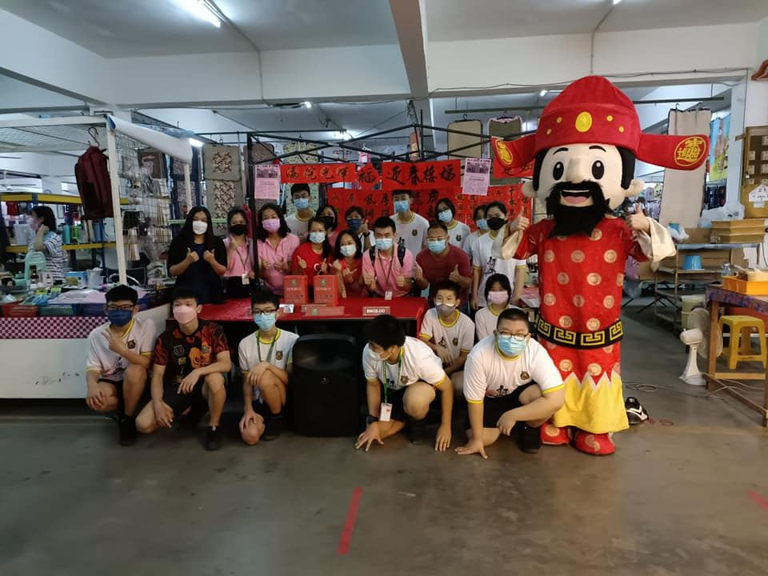
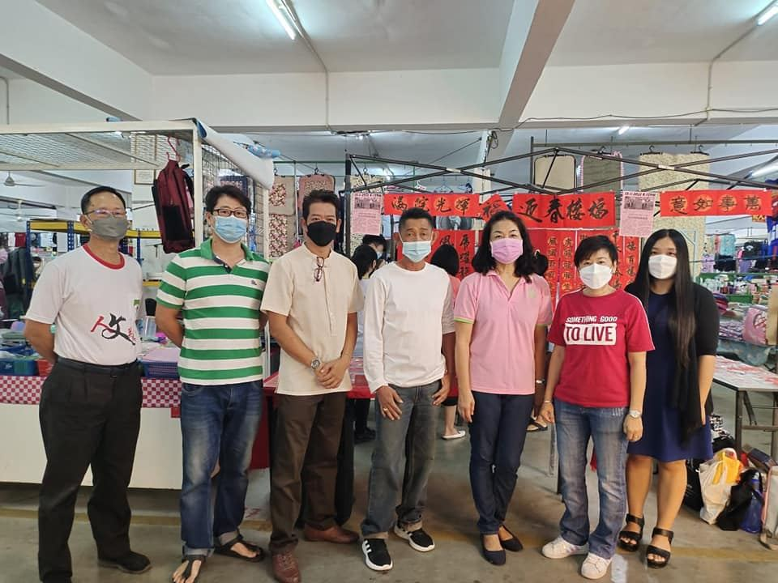
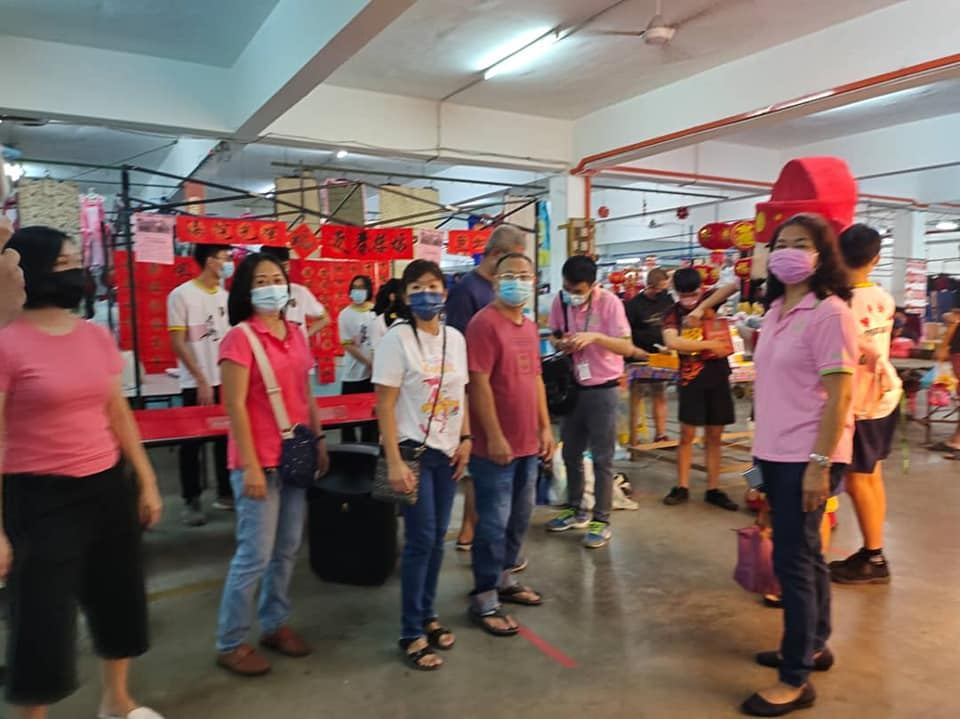
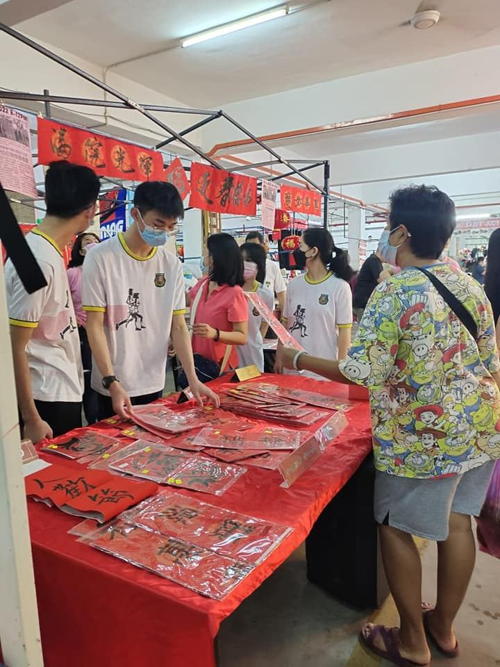
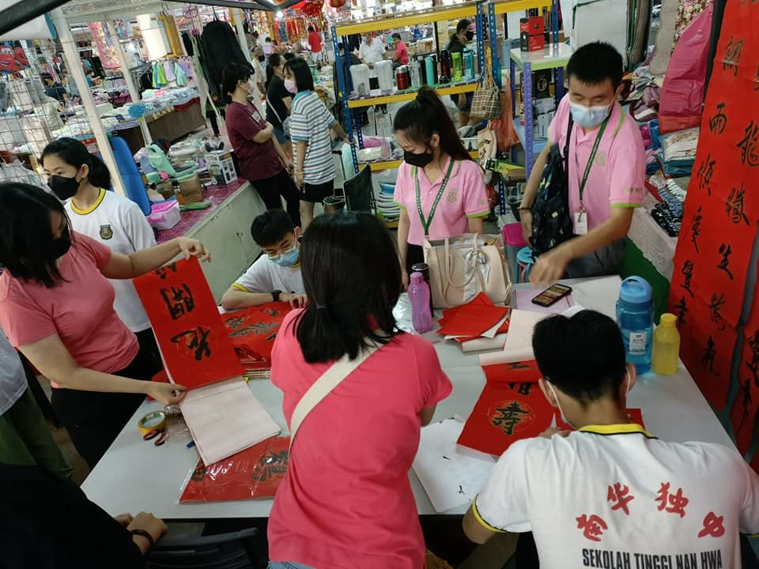
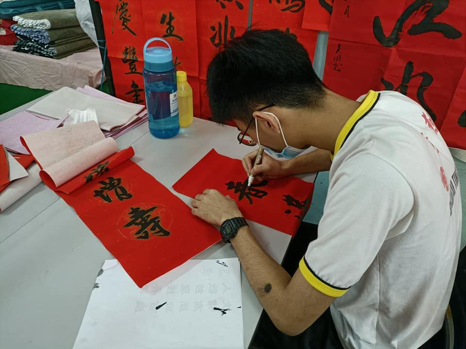
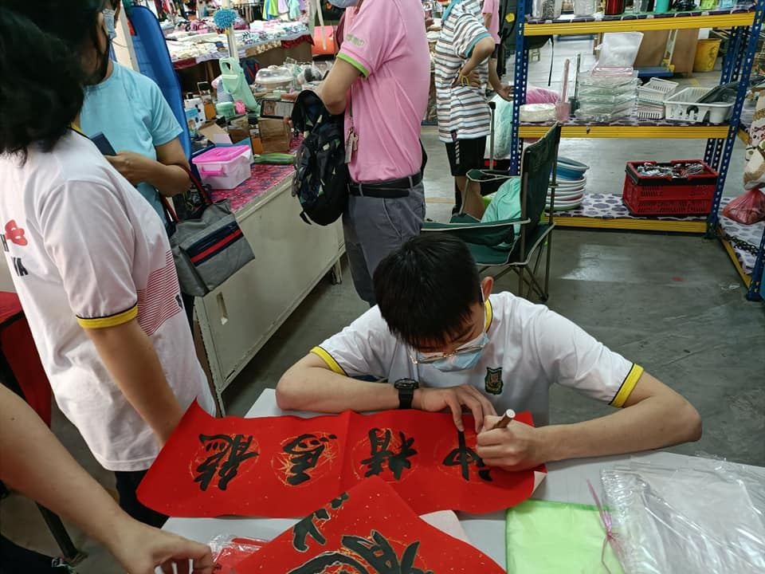
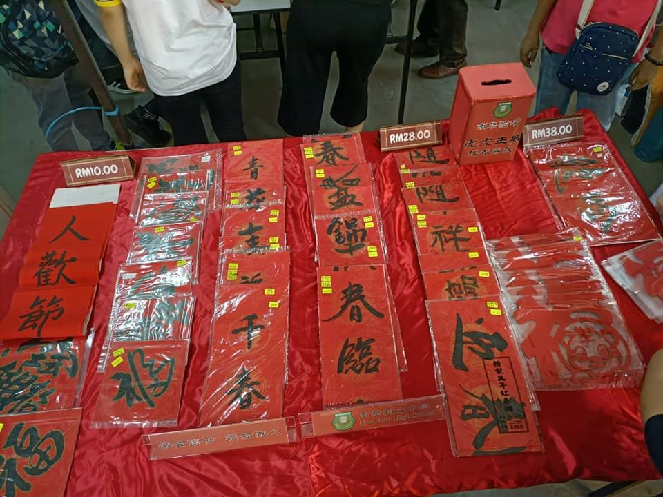

南华独中感谢文友会的全体同仁，书法家吴启强的配合，让这次的 “虎虎生威” 义务挥
南华独中感谢文友会的全体同仁，书法家吴启强的配合，让这次的 “虎虎生威” 义务挥春，圆满。
一副春联，传承的是传统文化，传递的是美好祝福。今早书法家吴起强及学员现场挥春，群众纷纷前来“接福”。
大家为进一步弘扬传统文化精神，增添节日喜庆气氛，财神爷和吉祥卡通人物也齐来丰富群众精神文化生活，展示新时代风采，实践所联办活动的笔墨凝书香活动。








📹 本篇含视频，收录于学校官方脸书。